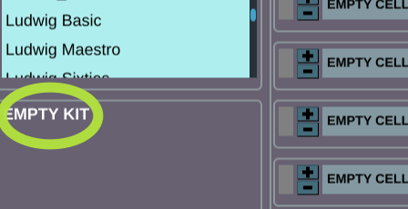
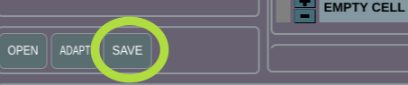

Drumlabooh is designed not to interfere with creativity. All you need to do is create a new MIDI track in your DAW, select a drumkit from the list, and play. Drumlabooh uses existing sampled drumkits or samples from sample packs.
1. Stereo vs Multi-channel modes2.0 Kits
2.1 Hydrogen Kits
2.2 SFZ Kits
2.3 Drumlabooh kits
2.4 Drumlabooh Alternate Samples Kits
2.5 Folder Kits
2.6 Quick Custom Kits
3. Mixer
4. Options
5. Multi-channel explained
5.1 Ardour
5.2 Reaper
5.3 Cubase
1. Stereo vs Multi-channel modes
The first thing you need to know is that there are two versions of Drumlabooh - Stereo and Multi (Multi-channel or Multi-output). The latter provides a separate mono output channel for each instrument in the drum kit - 36 channels in total. To use the Stereo version, add the Drumlabooh plugin to a track. To use the Multi-channel version, add Drumlabooh-multi.
In the Multi-channel version, the plugin's pan, volume, and mute controls are disabled because you can control them via tracks or buses in your DAW. Read the DETAILS section to learn how to use Multi mode in your DAW and how to route each drum to an individual track or bus.
2.0 Kits
When Drumlabooh starts, it scans all available kits and displays a list of them for you to choose from. You can also click the Open button below the kit information section to manually select a drumkit file from any location. Choose an .xml (Hydrogen format), .sfz (SFZ), or drumkit.txt or drumkit.labooh (Drumlabooh format) file in the drumkit’s folder.
Important note: when loading a drumkit, Drumlabooh converts the samples (in RAM) to match the DAW session’s sample rate. Large kits may take longer to load if, for example, the samples are at 48 kHz but the session rate is 44.1 kHz. The same applies to FLAC-compressed samples. If you try to load a large drumkit, please wait - do not assume that the plugin or DAW has frozen.
The best way to handle this is to use the Adapt button, which saves a copy of the current drumkit using the session’s sample rate and 32-bit float data format (24-bit for FLAC) in the drum_sklad directory. This copy will then be used as the active drumkit, and the next time it will load faster than the original kit.
This function works only with the Drumlabooh kit format and with samples in WAV, AIFF, or FLAC formats.
Now, let’s talk about how Drumlabooh supports different drum kit formats.
2.1 Hydrogen Drum Kits
When Drumlabooh starts, it searches for all installed Hydrogen Drum Machine kits in their default locations. Dozens of great kits have been created for Hydrogen. To install them you need to run Hydrogen and go to the Drumkits - Online Import menu, where you can select and download kits from the Hydrogen or Musical Artifacts repositories.
Some Hydrogen kits may already be installed on your Linux system. Currently, for both Linux and Windows, the best way to get new Hydrogen kits is through the Online Import feature, since public download links are generally not available.
2.2 SFZ Drum Kits
Drumlabooh scans for installed SFZ kits in the following predefined locations: $HOME/sfz-kits (Linux), C:\sfz-kits and D:\sfz-kits (Windows). SFZ kit directories must be placed in any of these locations to be recognized by Drumlabooh.
High-quality AVL Drumkits can be downloaded in SFZ format from AVLDrumkits_SFZ. You can also find many large SFZ drum kits here.
Drumlabooh supports a limited set of SFZ opcodes and parameters: group, off_by, region, key, sample, default_path, offset, lovel, and hivel. Drumlabooh does not support sample file names that contain spaces (because they are difficult to parse correctly from the SFZ file).
2.3 Drumlabooh Drum Kits
Drumlabooh uses its own kit formats (there are two formats, text-based and XML). One kit equals one directory, which should be placed in $HOME/drumlabooh-kits, $HOME/drum_sklad, or /usr/share/drumlabooh-kits on Linux, and in C:\drumlabooh-kits, D:\drumlabooh-kits, C:\drum_sklad, or D:\drum_sklad on Windows.
Drumlabooh usually installs kits automatically from its official Drum Sklad repository on GitHub. You can also find detailed information about the formats there - it is quite simple. The word "sklad" means "warehouse," "storage," or "repository."
Additional kits that are not hosted on GitHub can be downloaded from the Drum Sklad channel on Telegram. The complete Drumlabooh kit collection therefore includes Drum Sklad on GitHub and Drum Sklad on Telegram.
All native Drumlabooh kits include optional built-in General MIDI mapping settings, which can be used in MIDI Map mode by selecting the Kit option there.
2.4 Drumlabooh Alternate Sample Kits
Some Drumlabooh kits contain several alternative samples for each instrument slot. When you load such a kit, its name is shown in yellow and accompanied by a hint:

Additionally, drum cells will be highlighted with a special color. To switch samples, use the "+" and "-" buttons for each drum cell or slot.
2.5 Folder Kits
Drumlabooh can use directories placed at $HOME/drum_dirs, C:\drum_dirs, or D:\drum_dirs as ready-to-use Alternate Sample kits. Just create a drum_dirs directory and put, for example, a My Drumkit folder inside, where you place the samples in subdirectories as follows (names can vary):
1. Kick
kick01.wav
kick02.wav
kick03.wav
2. Snare
snare01.wav
snare02.wav
snare03.wav
Here, 1. Kick and 2. Snare are subdirectories, and the others are files inside them. The numbers in directory or file names help Drumlabooh sort them alphabetically.
This is a simple way to use many sample packs by just unpacking them into the drum_dirs directory. Many such kits are available from https://www.reddit.com/r/Drumkits/.
There are some limits for Folder Kits: a maximum of 36 instrument folders per kit and up to 128 samples in each directory/folder.
Supported sample formats
Drumlabooh supports samples in the following formats: WAV, AIFF, FLAC, OGG, and MP3. OGG and MP3 samples cannot be adapted. Stereo samples are read as mono (using the left channel), because pre-panned drums (from the kit) can make internal mixing sound unnatural.
Full list of directories where Drumlabooh searches for kits
Drumlabooh/Drumrox format:
/usr/share/drumrox-kits /usr/share/drumlabooh-kits $HOME/drumrox-kits $HOME/drumlabooh-kits $HOME/drum_sklad //main directory for locally installed kits C:\drumlabooh-kits D:\drumlabooh-kits C:\drum_sklad
Hydrogen format:
/usr/share/hydrogen/data/drumkits /usr/local/share/hydrogen/data/drumkits /usr/share/drmr/drumkits $HOME/.hydrogen/data/drumkits $HOME/.drmr/drumkits
SFZ format:
$HOME/sfz-kits C:\sfz-kits D:\sfz-kits
3. Built-in mixer
To the right of the drumkit list, you see 36 cells (or slots) for loaded samples. Here is the layout of each cell:

1 LED – lights up when a note is played.
2 Instrument name – defined in the kit; otherwise, the file name is used.
3 FX – button to open the FX window for this instrument. You can close the window using the "close" button or the Escape key. All effects in that window can be turned on or off, so they work only when enabled.
There are LP (Low-pass filter, allows only frequencies below the cutoff value) and HP (High-pass filter, allows only frequencies above the cutoff value). To simplify the code and improve performance, the cutoff parameter is not in Hz but a floating-point number within the range 0..1.
Both filters are resonant and have the resonance parameter. Experiment with the sliders to create new and interesting sounds. The HP filter works best for hi-hats, the LP for kicks; either HP or LP can produce cool effects on the snare. If your sample sounds weak or thin, try the Analog slider to add some warmth.Note: In Ardour, when the FX window becomes active, the plugin window is hidden, and when you close the FX window, the plugin window reappears. In Reaper and Muse, both windows are visible as intended.
4 Pan control – values range from 0 (full left) to 1 (full right), with 0.5 being the center. See the Pan mode option to understand the panning algorithm. It is important to note that different DAWs have different pan modes for mixing; sometimes the DAW provides an option to select it. Drumlabooh internally behaves like the DAW mixer and offers the same flexibility.
5. Volume slider – non-linear, with values ranging from -96 to +6 dB.
6. Mute switch – mutes the instrument.
Under the Options, you will find the "global" Analog switch and slider, which affect the entire mix at the end of the signal chain. Useful for live but quiet drums.
4. Options section
At the lower part of the plugin window, you can see Options.
MIDI map mode – there are two modes, Auto and Kit. With Auto, Drumlabooh assigns MIDI notes to samples starting from the numerical value of another option, Base MIDI note (default: 36), which specifies the MIDI note number to map the first instrument in the kit. MIDI note 36 = C in the 2nd octave. This mode is the default and works well for playing from a MIDI keyboard. When Kit is selected, Drumlabooh uses MIDI note assignments from the drumkit file; usually, this is General MIDI mapping, compatible with e-drums and drum pads. It is also the proper mode for Ardour's drum grooves.
So, MIDI mapping is the assignment of MIDI note numbers to drum instruments (Drumlabooh cells) from the kit. The mapping data is included in many Drumlabooh and SFZ kits. However, some drums or percussion instruments are not covered by General MIDI, so in these cases, Auto mode is more useful and gives you access to all instruments in the kit.
For more complex MIDI mapping, use the power of your DAW, e-drum/pad options, or plugins such as, in Reaper, "JS MIDI map to key v2" – just place it before Drumlabooh and create or select a mapping file, for example:
A3 -> E5 C4 -> C5
Ignore MIDI velocity – plays samples at full level. Plain and loud.
Pan mode – allows you to select the pan mode for Drumlabooh's internal mixer. See the article. The default panner is equal power panning, law: -3 dB (sin/cos taper).
By the way, pan mode is a significant factor in how a DAW "sounds." The pan mode, or panning law, is the algorithm that controls the total acoustic power output of two channels, reducing their level when the pan position moves to the center. Otherwise, the sound at the center would be louder, because both channels play at full power, making it louder than the same mono sound. Therefore, any stereo output must be reduced to some degree when the pan position approaches the center to prevent a loudness increase.
It may be better to set the pan mode in Drumlabooh to match your DAW's pan mode, so that all drum samples are panned consistently. Experiment to find what sounds best in your mix.
Analog – the global saturation on/off and its level. Useful for quiet drum kits.
5. Multi-channel explained
In the Multi-channel version (Drumlabooh-multi), the plugin's pan, volume, and mute controls are disabled, because you can control them via tracks or buses in your DAW.
Drumlabooh provides 36 mono output channels, one per sample of the drumkit.
5.1 How to use Multi-out with Ardour?
0. You can manually route the plugin's outputs to tracks or buses, but read further to learn how to do it automatically.
1. Create a MIDI track with Drumlabooh-multi as the instrument.
2. You'll see this window:

Select "36 channels" and "Fan out," then press Add. That's all! Now you have 36 tracks as outputs, already routed from Drumlabooh-multi's track.
3. Load the drumkit into Drumlabooh-multi. For example, Ludwig Sixties. It has 19 instruments. Thus, we need only 19 output channels from the 36 available. Remove the unused ones.
The alternative way:
If you put Drumlabooh-multi on an already created track (for example, previously used with Drumlabooh-stereo), you can route channels manually or semi-manually. In the latter case:
1. By default, Drumlabooh-multi will play to the stereo output. We don't need that. Let's create individual channels or buses for each drum/percussion sample.
2. Right-click on the top of the channel strip and select Fan out to tracks or Fan out to buses. Now you have one track or bus per channel to control each of the 36 drumkit channels. Please note that these tracks and buses are mono, so to use stereo FX on them, right-click on the effect, select Pin connection, and connect the pins to create stereo:

3. All new tracks/channels are now in a group. To ensure they can be muted, soloed, etc., properly, right-click on the group header and select Remove group:
3. All new tracks/channels are now in a group. To make them muted, soloed, etc., normally, right-click on the group header and select Remove group:

4. Now, remove the unneeded tracks (for example, if the kit has only 8 instruments, but you have 36 tracks from Drumlabooh!)
5.2 How to use Multi-out with Reaper?
0. You can manually route the plugin's outputs to tracks or buses, but read further to see how to do that automatically.
1. Insert – Virtual Instrument on track, and add Drumlabooh-multi (LV2i or VST3i).
2. Confirm in the Build routing confirmation window.
3. Voila!
5.3 How to use Multi-out with Cubase?
1
2
3 - LOAD KIT
4
5
6
7
8
9
Драмлабух старается не мешать творчеству. Всё что вам нужно, дабы создать с его помощью партию ударных, это создать новую MIDI-дорожку в вашей любимой программе звукозаписи, затем выбрать в Драмлабухе один из установленных драмкитов, или накидать сэмплов из папок, и начать играть с клавиатуры, дрампадов или прописывать квадратики в секвенсере.
1. Стерео и Многоканальный режимы2.0 Драмкиты
2.1 Киты Hydrogen
2.2 Киты SFZ
2.3 Киты Drumlabooh
2.4 Киты с альтернативными сэмплами
2.5 Быстрые самодельные киты
3. Встроенный микшер
4. Настройки
5. О многоканальном режиме подобно
5.1 В Ardour
5.2 В Reaper
5.3 В Cubase
1. Стерео и Многоканальный режимы
Драмлабух идет в двух версиях плагина - стерео (называется просто Drumlabooh) и многоканальной (Drumlabooh-stereo). Последняя выводит каждый инструмент из драм-кита в свой отдельный моно-канал, всего их может быть 36. Чтобы использовать стерео-версию, надо подключить к дорожке Drumlabooh, а для многоканальной - Drumlabooh-multi.
В стерео-версии микширование (уровень, панорама, кнопка mute) происходит на уровне плагина. В многоканальной всё это в плагине излишне и возложено на вашу программу звукозаписи, в микшере которой вы и будете управлять вышеперечисленным.
Читайте ПОДРОБНОСТИ об использовании многокального режима - как подключать инструменты драмкита к разным дорожкам или шинам.
2.0 Драмкиты
При запуске Драмлабух сканирует в нужных папках драмкиты всех известных ему форматов и предлагает вам список, откуда киты можно выбирать. Под списком и картинкой кита (если такая есть) находится кнопочка Open, через нее можно открыть драмкит, лежащий вне папок, где ищет Драмлабух. Через диалоговое окно надо выбрать файл xml (для формата Hydrogen ), sfz (для SFZ) или, в случае с форматом Drumlabooh, drumkit.txt.Важное замечание! Загружая драмкит, Драмлабух преобразует его сэмплы, в памяти, к частоте оцифровки текущей сессии DAW, что при большом драмките может затормозить загрузку и даже создать ощущение зависона. Например, сэмплы в драмките имеют частоту 44.1, а частота сессии 48 килогерц. Просто подождите. Но если не хотите ждать каждый раз, нажмите кнопку Adapt под списком драмкитов. Она сохранит копию текущего драмкита в папку drum_sklad, и у этой копии сэмплы будут с частотой текущей сессии, кроме того данные преобразуются в 32 bit float (24 integer для FLAC) моно. Копия автоматически установится как текущий драмкит. При этом поддерживаются, для такого клонирования, только киты в формате Драмлабух с сэмплами в форматах WAV, AIFF и FLAC.
Давайте обсудим, какие вообще форматы китов поддерживаются.
2.1 Драмкиты в формате Hydrogen
При запуске, Drumlabooh сканирует все установленные киты от драм машины Hydrogen, которая выпускается для Linux и Windows. Под Hydrogen существуют десятки драмкитов, но чтобы установить их, надо запустить сам Hydrogen и пойти в нем в меню Драмкиты - Online import, откуда можно скачать киты из двух хранилищ -Hydrogen и Musical Artifacts.
В Линуксе при установке самого Hydrogen скорее всего установятся и некоторые киты. На сегодня, под все системы, самый быстрый способ скачать дополнительные киты для Hydrogen, это его вышеописанная функцияOnline import, ибо публичных ссылок на отдельные киты из хранилищ вы не найдете.
2.2 Драмкиты в формате SFZ
Драмлабух сканирует установленные SFZ-киты в $HOME/sfz-kits (под Linux), а также в c:\sfz-kits и d:\sfz-kits (под Windows). Как обычно, папки с SFZ китами надо поместить туда, чтобы Драмлабух их увидел.
Драмлабух в формате SFZ поддерживает MIDI mapping, заданный параметрами key. Для использования такого мэппинга, установите в Драмлабухе опцию MIDI map mode равной "Kit". Иначе же, в режиме "Auto", мэппинг будет в виде последовательной нумерации, начиная, по умолчанию, с миди-ноты 36 для бас-бочки, первого сэмпла по счету в ките. Однако первую ноту можно изменить в опции Base MIDI Note.
Драмкиты превосходного качества - AVL Drumkits - вы можете скачать в формате SFZ по ссылке http://www.bandshed.net/sounds/AVLDrumkits_SFZ. Также большие SFZ-киты можно скачать тут.
Drumlabooh поддерживает огранииченный набор опкодов и параметров SFZ: group, region, key, sample, default_path, offset, lovel, hivel. Drumlabooh не поддерживает для сэмплов в SFZ файлы с именами, содержащими пробелы.
2.3 Киты в формате Драмлабуха
Киты в формате Драмлабуха. Один кит = одна папка, помещенная в $HOME/drumlabooh-kits, /usr/share/drumlabooh-kits, $HOME/drum_sklad (в Линукс), либо, для Windows, в c:\drumlabooh-kits, d:\drumlabooh-kits, c:\drum_sklad или d:\drum_sklad.
При установке самого Драмлабуха в комплекте с ним идут киты из официального хранилища Drum Sklad on Github. Там же вы можете узнать подробности о формате.
Дополнительные киты, которых нет на Гитхабе, качайте с Drum Sklad в Телеге. Так что полная коллекция китов для Драмлабуха лежит на Гитхабе ПЛЮС в Телеге.
Все киты формата Драмлабух имеют опциональный, заданный в ките, MIDI-mapping стандарта General MIDI, который можно выбрать в Драмлабухе в опции MIDI map mode, где в выпадающем списке надо выбрать "Kit". В противном случае ("Auto") Драмлабух будет осущесвлять mapping по принципу нумерации миди-нот начиная, по умолчанию, с 36 для бас бочки (меняется в опции MIDI base note).
2.4 Киты с альтернативными сэмплами
Некоторые киты Лабуха содержат варианты сэмплов для каждого слота/инструмента. Когда загружается такой кит, его название пишется желтым и дается подсказка, что для переключения вариантов сэмплов надо нажимать кнопки плюс и минус рядом со слотом. Вот на картинке я отметил:
2.4 Быстрые самодельные киты
Не китами едиными жив человек, в сети доступно много паков с сэмплами, например есть вот такие ресурсы - www.reddit.com/r/Drumkits и www.goldbaby.co.nz/freestuff.html. Как же загрузить отдельные сэмплы в Лабуха? Неужели создавать традиционный драмкит? Нет. На сцену выходят Быстрые киты!
Быстрый кит не хранит в себе сами файлы сэмплов, а лишь запоминает пути к ним. Чтобы создать быстрый кит, надо:
1. Добавьте нового Драмлабуха на дорожку. Должен быть "пустой" плагин без загруженного кита. Все ячейки пустые.
2. У каждой ячейки есть, слева от названия слота, две кнопочки одна над другой:

3. Нажатие на верхнюю открывает диалог выбора файла с сэмплом. Он будет загружен в этот слот. Нижняя кнопка выгружает сэмпл и очищает слот.
4. Добавьте еще какие-то сэмплы в слоты.
5. Теперь дадим вашему киту имя. Дважды щелкните мышью на надписи с именем кита, сейчас там написано "EMPTY KIT":

6. Введите имя кита, нажмите Enter.
7. Теперь нажмите кнопку Save:

8. Ваш быстрый кит сохранится в папке drum_sklad внутри домашнего каталога. Этот кит будет сканироваться Лабухом как обычные киты и доступен из списка. Также он автоматически становится, после сохранения, текущим китом в плагине.
Напомню - быстрые киты не хранят в своих папках файлы, хранятся лишь абсолютные пути к ним. Если вы хотите сделать из быстрого кита обычный портабельный кит с сэмплами внутри папки, то нажмите кнопку Adapt и исопльзуйте полученную копию.
Быстрые киты можно редактировать, не забывайте потом нажимать кнопку Save. Если дать киту новое имя (двойной клик на названии кита на той надписи, что ниже списка китов и информационной панели), то кит сохранится под новым именем, но останется и кит со старым названием. Если в кит, полученный посредством кнопки Adapt, добавлять новые сэмплы, то они будут добавляться в виде пути на файл, а не копироваться в папку с сэмплом. Делать Adapt для кита с сэмплами MP3 или OGG - плохая идея, файлы этих типов не "клонируются", используйте WAV, AIFF или FLAC.
Быстрый кит позволяет быстро создать свой кит, однако не поддерживает многослойные сэмплы и прочие плюшки, присущие "обычным" китам.
Поддерживаемые форматы сэмплов
Драмлабух поддерживает сэмплы в форматах WAV, AIFF, OGG, FLAC, MP3. Стерео сэмплы читаются как моно, движок загружает только левый (первый по счету) канал, потому что так проще и правильнее микшировать внутри движка. Предварительно панорамированные стерео-киты навязывают вам определенное расположение ударных, и если вы захотите панорамировать их иначе, это ухудшит звучание, ибо исходный сигнал будет слишком нарушен.
Полный список папок, где Drumalbooh ищет киты
Формат Drumlabooh:
/usr/share/drumrox-kits /usr/share/drumlabooh-kits $HOME/drumrox-kits $HOME/drum_sklad $HOME/drumlabooh-kits C:\drumlabooh-kits D:\drumlabooh-kits C:\drum_sklad
Формат Hydrogen:
/usr/share/hydrogen/data/drumkits /usr/local/share/hydrogen/data/drumkits /usr/share/drmr/drumkits $HOME/.hydrogen/data/drumkits $HOME/.drmr/drumkits
Формат SFZ:
$HOME/sfz-kits C:\sfz-kits D:\sfz-kits
3. Встроенный микшер
Справа от списка с драмкитами расположены ячейки инструментов, куда загружаются ударные из драмкита или внешнего файла. Каждая ячейка состоит из следующих частей:
1 Светодиод - загорается когда играет инструмент, загруженный в ячейку.
2 Название инструмента - задано в драмките или вычислено Лабухом, если не задано.
3 FX - вызывает окно эффектов для текущего инструмента. Окно можно закрыть кнопкой с крестиком либо клавишей Esc. Используйте эффекты, если привычный звук драмкита надоел.
Имеем два резонансных фильтра - LP (низкочастотный, пропускает только частоты ниже определенного значения) и HP (высокочастотный). Значение (частота) среза регулируется параметром cutoff (первый ползунок фильтра). Также есть параметр резонанса - resonance. Играйтесь ими, чтобы на лету делать новые звуки из исходных сэмплов. Если же звучание сэмплов кажется тусклым или убогим, попробуйте включить блок Analog и вращать крутилку, чтобы придать сигналу теплое, аналоговое звучание.
Заметка: в Ardour при вызове окна FX исчезает из виду окно плагина, и появляется, когда вы закрываете окно FX. В Reaper или Muse такого не происходит.
4 Регулятор панорамы - значения от 0 (крайнее левое) до 1 (крайнее правое), 0.5 середина. Помещает инструмент левее или правее, при по алгоритму, заданному опцией Pan mode (см. ниже). Разные DAW при микшировании применяют к дорожкам различные режимы панорамы, а некоторые DAW позволяют выбрать режим - собственно, во многом именно алгоритмы панорамы влияют на "фирменное" звучание DAW. Драмлабух, имея внутри себя полноценный микшер, как в DAW, тоже предоставляет выбор режима панорамы.
5. Регулятор громкости - нелинейный, значения от -96 до +6 dB.
6. Переключатель Mute (молчать, заглушить) - если стоит галочка, инструмент не играет, т.е. временно исключается из микса.
Настройки плагина
В нижней части окна плагина находятся настройки.
MIDI map mode - там два режима, Auto и Kit. Если выбрано Auto, Drumlabooh назначает каждому инструменту из кита номера MIDI-нот, начиная с другой опции, Base MIDI note, где по умолчанию стоит 36, это нота C второй октавы. Такой режим установлен по умолчанию и он удобен для игры с MIDI-клавы или прописывания квадратиками в пианоролле. Другой режим, Kit, использует номера MIDI-нот, заданные в файле драмкита, как правило они соответствуют стандарту General MIDI mapping и совместимы с электронными барабанами или падами. Этот же режим совместим с грувами из Ардора.
То есть, MIDI mapping это соответствие номеров MIDI-нот (поступающих от клавиатуры, пэдов или с пианоролла) и инструментов из драмкита. Почти все драмкиты Драмлабуха имеют совместимость с General MIDI при выборе режима Kit. Установки MIDI mapping читаются также из драмкитов формата SFZ. Однако, стандарт General MIDI может включает в себя всё многообразие ударных, и в некоторых китах ряд инструментов не имеют соответсвий в номерах нот General MIDI. Для таких китов, чтобы получить доступ ко всем инструментам кита, лучше выбрать режим мэппинга Auto.
Для более сложного MIDI mapping используйте настройки вашего MIDI-железа или, в Рипере, плагин "JS MIDI map to key v2" - просто подключие его к дорожке перед Драмлабухом и выберите созданный текстовый файл мэппинга условно такого содержания:
A3 -> E5 C4 -> C5
Pan mode - выбор режима панорамы для микшера Драмлабуха. Подробнее в этой статье. По умолчанию стоит паннер на основе синуса/косинуса, -3 dB.
Во многом режим панорамы и определяет звучание микса в DAW, ибо отвечает за воспринимаемую громкость сигнала в приближении ползунка к середине. Вникните в это подробнее, и вероятно будет логичным выбрать в Лабухе такой же режим панорамы, как в вашей DAW.
Analog. Глобальный переключатель и слайдер сатуратора, который влияет на весь микс, обрабатывая его в конце цепи следования сигнала. Полезно для живых, но тихих барабанов.
5. О многоканальном режиме подробно
Повторюсь, что в многоканальной версии плагина - Drumlabooh-multi - нет ползунков панорамы, громкости и кнопки Mute - всё это возложено на микшер DAW.
Драмлабух предоставляет 36 выходных моно-каналов, по одному на каждый инструмент из драмкита.
5.1 Как использовать многоканальность с Ардором?
0. Вы можете направить звуковые выходы плагина вручную, создавая дорожки и делая на них роутинг, либо автоматически. Ниже я рассказываю про автоматический режим.
1. Создайте MIDI-дорожку выбрав в качестве инструмента Drumlabooh-muiti.
2. Появится вот такое окно:
Выберите "36 channels" и "Fan out", нажмите Add. Готово! Получаете группу из 36 дорожек-каналов, уже с перенаправлением на них звука с дорожки Drumlabooh-multi. Каждая дорожа - один инструмент из кита.
3. Загрузите в Drumlabooh-multi драмкит. Например, в нем будет 18 инструментов. Таким образом, нам нужно только 18 выходных каналов из имеющихся 36. Удалите ненужные.
Альтернативный путь:
1. Допустим вы работали на дорожке с обычным стерео-Лабухом и хотите навесить вместо него мульти. Вперед! Подключить к дорожке мульти-версию. Но теперь мульти будет играть на стерео. Нам это не нужно. Надо раскидать выходы на шины или другие дорожки.
2. Правый клик в верхней части микшерного канала дорожки и выберите Fan out to tracks или Fan out to buses. Подождите немного - и появится группа с моно-дорожками или шинами, в зависимости от того, куда вы распределяли - в дорожки или шины.
3. Чтобы использовать на такой стерео-эффект, надо сделать правый клик на добавленном эффекте, выбрать в появившемя меню пункт Pin connection и соединить порты следующим образом:
4. Теперь все новые дорожки-каналы в группе. Объединены. Чтобы нормально работать с ними по отдельности, надо сделать правый клик на заголовке группы, и выбрать пункт меню Remove group:
5. Теперь осталось удалить ненужные дорожки - например, в драмките только 18 инструментов, а у нас 36 дорожек!
5.2 Многоканальность в Reaper
0. Вы можете направить звуковые выходы плагина вручную, создавая дорожки и делая на них роутинг, либо автоматически. Ниже я рассказываю про автоматический режим.
1. Insert - Virtual Instrument on track, добавить Drumlabooh-multi (LV2i или VST3i).
2. Подтвердить в Build routing confirmation window.
3. Готово!
5.3 Как использовать Multi-out в Cubase?
1
2
3 - LOAD KIT
4
5
6
7
8
9